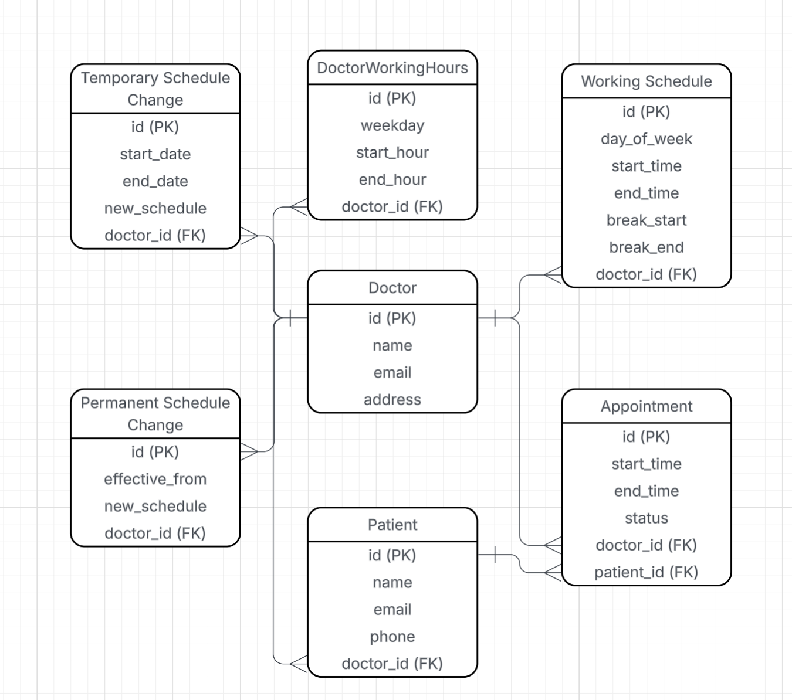
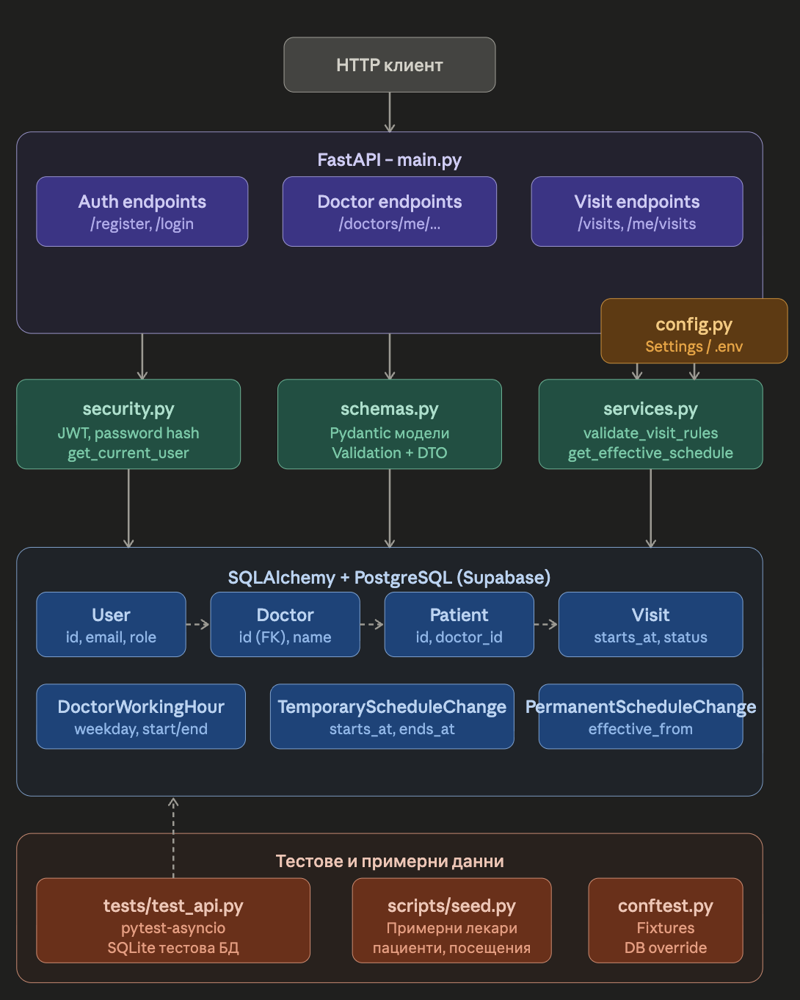

Боян Герасимов
Authorization header.Request:
{
"name": "Dr. Ivan Petrov",
"email": "doctor@example.com",
"password": "password123",
"address": "Sofia, Mladost 1",
"weekly_schedule": [
{
"weekday": 0,
"intervals": [
{"start": "08:30:00", "end": "12:00:00"},
{"start": "13:00:00", "end": "18:30:00"}
]
}
]
}Response:
{
"access_token": "<jwt_token>",
"token_type": "bearer"
}Request:
{
"name": "Georgi Ivanov",
"email": "patient@example.com",
"password": "password123",
"phone": "+359888111222",
"doctor_id": "<doctor_uuid>"
}Response:
{
"access_token": "<jwt_token>",
"token_type": "bearer"
}Request:
{
"starts_at": "2026-05-21T10:00:00Z",
"ends_at": "2026-05-21T10:30:00Z"
}Response:
{
"id": "<visit_id>",
"doctor_id": "<doctor_id>",
"patient_id": "<patient_id>",
"starts_at": "2026-05-21T10:00:00Z",
"ends_at": "2026-05-21T10:30:00Z",
"status": "active",
"cancelled_by": null
}Публични:
POST /auth/register/doctorPOST /auth/register/patientPOST /auth/loginЗащитени:
PUT /doctors/me/working-hoursPOST /doctors/me/temporary-working-hoursPOST /doctors/me/permanent-working-hoursPOST /patients/me/visitsPOST /visits/{visit_id}/cancelGET /me/visits400 Bad Request
Visit must be created at least 24 hours in advanceVisit must be inside doctor working hoursVisit overlaps with another visitVisit cannot be cancelled later than 12 hours before start401 Unauthorized
Could not validate credentials403 Forbidden
404 Not Found
Doctor not foundPatient not foundVisit not foundapp/main.py
app/models.py
User, Doctor,
Patient, DoctorWorkingHour,
TemporaryScheduleChange,
PermanentScheduleChange, Visit
-app/schemas.py -
входни/изходни DTO структури и базова валидация на данни -
app/security.py - hash_password(),
verify_password(), create_access_token(),
get_current_user() - app/services.py - основни
бизнес методи и правила при записване/отмяна -
app/database.py - конфигурация на engine и async сесии -
app/config.py - конфигурация чрез environment
променливи
